2. 부가기능 설치
1-1) Add to Firefox 버튼 클릭
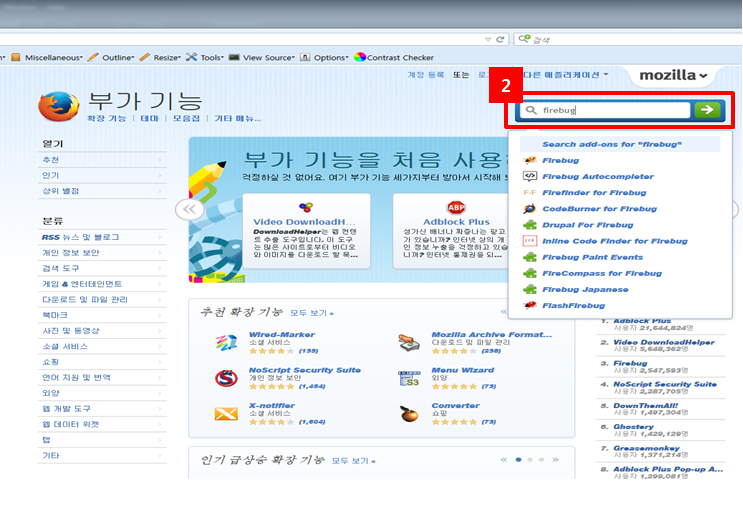
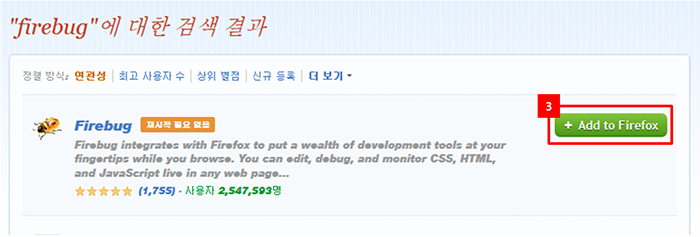
1-2) 부가기능 설치 확인 : 상단메뉴에서 [도구 – 부가 기능] 클릭 시 뜨는 확장 기능 창에서 확인 가능
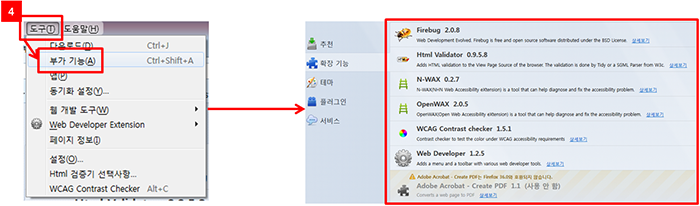
1-3) Html Validator 설정하기 : 상단메뉴에서 [도구 – Html 검증기 선택사항] 클릭
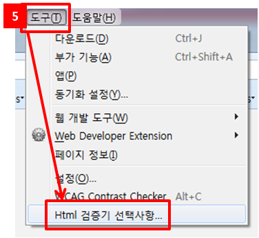
1-4) 알고리즘을 병행 선택 후 확인
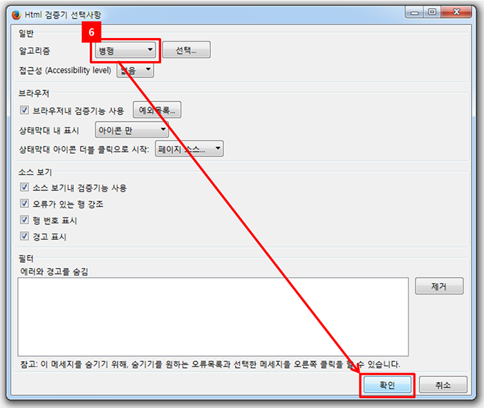
1-5) 부가기능 바로가기 아이콘 추가 : 상단메뉴에서 [보기 – 도구 모음 – 사용자 지정] 화면에서 부가기능(예: Html Validator) 아이콘을 우클릭하여 “도구 상자에 추가” 클릭
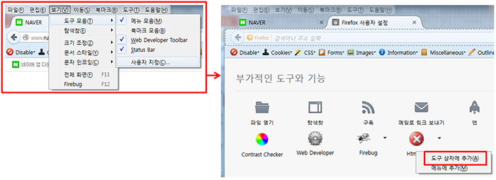
1-6) 추가된 아이콘에 마우스 오버를 하면 다음과 같은 팝업창이 뜨고 클릭하면 상세한 정보를 볼 수 있는 창 활성화 됨.
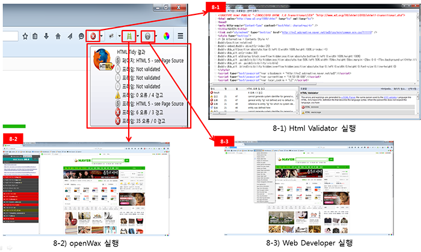
1-7) 추가된 아이콘을 클릭하면 상세한 정보를 볼수 있는 창 활성화 됨
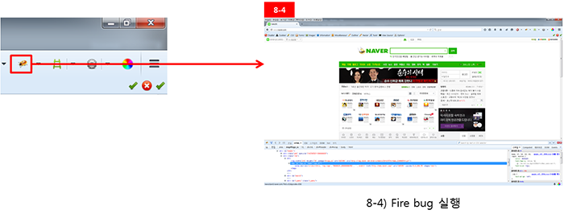
3.오류체크
-페이지 하단 또는 상단에 오류여부가 나타난다.
1) 오류표시
- 오류 없는 경우
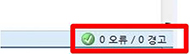
- 오류 있는 경우
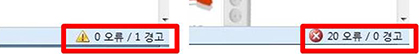
2) 경고 또는 오류 찾기(오류는 반드시 수정, 경고는 준수)
- 해당 페이지의 우측 하단의 상태표시줄에 경고 또는 오류표시가 된 부분을 더블 클릭한다.
- 해당 페이지의 오류를 원인을 찾고 해결하면 다음페이지로 넘어간다.
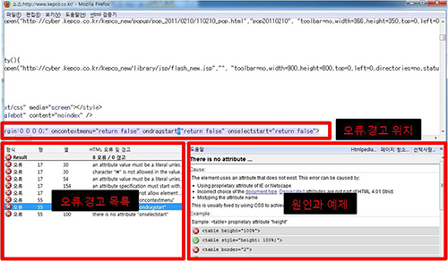